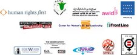

|
|
|
Browsing
Contact Us |
Campaigners |
Face to Face |
Tribune |
Interview |
News |
On the Web |
One Million |
Report
Farsi | Français | German | Italian | Spanish | العربية Also in this section
|
 Leading Women and Human Rights Organizations Issue Statement in Support of Women’s Rights Defenders in IranFriday 7 November 2008 Change for Equality: Leading women and human rights organizations have issued a statement objecting to the recent increase in pressures on women’s rights activists involved in the One Million Signature Campaign. The letter issued by: Human Rights First; International Women’s Rights Action Watch Asia Pacific; Egyptian Center for Women’s Rights; International Federation for Human Rights (FIDH); Equality Now; We, the undersigned international women’s and human rights organizations, submit this letter to express our deep concern regarding the increasing harassment of women human rights defenders in Iran. Among those targeted have been members of the One Million Signatures Law enforcement bodies have responded by prosecuting at least 45 members of the Campaign. Campaign members have been sentenced for writing, for meeting in homes (which they are forced to do as public spaces are not made available to them), and for collecting signatures. The government continues to detain, intimidate, and prohibit the women’s rights activists from traveling. Recent developments include: • The sentencing of Campaign member Zeinab Peyghambarzadeh; • The October 15, 2008 arrest and continued detention of student and • The prevention of Campaign member Sussan Tahmasebi from traveling; and • The search of Campaign member Parastoo Alahyaari’s home and the seizure of her laptop computer and other Campaign-related materials. On November 2, 2008, an appeals court sentenced Zeinab Peyghambarzadeh to a one-year prison term. The sentence, suspended for a period of 3 years, will require Peyghambarzadeh to report to the Intelligence Ministry every 4 months during this time. This sentence is in On October 15, 2008, two individuals who identified themselves as traffic police pulled Esha Momeni over on the pretext of illegally passing another vehicle and arrested her. Momeni, a dual American-Iranian citizen, is a graduate student at California State University, Northridge On October 26, 2008, security officials at Imam Khomeini Airport confiscated Sussan Tahmasebi’s passport and prevented her from traveling. The same day, Tahmasebi’s home was searched by five agents who seized Tahmasebi’s laptop computer, books, and other On October 18, 2008, two officers from the Gisha Police Station searched the home of Parastoo Alahyaari while she was at work. The officers took her laptop, CDs, books, picture albums, and other Campaign materials, leaving a summons with Alahyaari’s mother. Later, We strongly object to the continued harassment of these women’s rights activists, who are being targeted for non-violent activity to promote women’s rights. We urge the Iranian government to respect the right of these activists to freedom of association and assembly. These rights are enshrined in and protected by the Universal Declaration of Human Rights and the International Covenant on Civil and Political Rights. Iran is a state party of the ICCPR and therefore legally bound to implement it. We note, in particular, that the actions of the Iranian authorities directly contravene several provisions of the Declaration on Human Rights Defenders adopted by the UN General Assembly on December 9, 1998, in particular: Article 1 (recognizing everyone’s right, individually and in association with others, to promote and to strive for the protection and • overturn the conviction of Zeinab Peyghambarzadeh; • release Esha Momeni and return her property; • return Sussan Tahmasebi’s passport and other confiscated possessions to her and lift the ban that has repeatedly prevented her from traveling; and • return the property of Parastoo Alahyaari to her and refrain from bringing charges against her. • End the harassment and prosecution of members of all women’s rights activists and defenders in Iran, including members of the One Million Signatures Campaign. Thank you for your attention to these urgent matters. Matthew Easton Director – Human Rights Defenders Program Human Rights First Sunila Abeysekera Executive Director International Women’s Rights Action Watch Asia Pacific Nehad Abul Komsan Executive Director Egyptian Center for Women’s Rights Souheyr Belhassen President International Federation for Human Rights (FIDH) Taina Bien-Aimé Executive Director Equality Now Charlotte Bunch Executive Director Center for Global Women’s Leadership Cindy Clark Acting Interim Director Association for Women’s Rights in Development Farida Deif Women’s Rights Division Human Rights Watch Lynnsay Francis Regional Coordinator The Asia Pacific Forum on Women and Development (APWLD) Hadi Ghaemi Coordinator International Campaign for Human Rights in Iran Mary Lawlor Director Front Line – The International Foundation for the Protection of Human Rights Defenders Virada Somswasdi President Foundation for Women, Law and Rural Development (FORWARD) Eric Sottas Secretary General World Organization Against Torture (OMCT) Women Living Under Muslim Laws – International Solidarity Network |